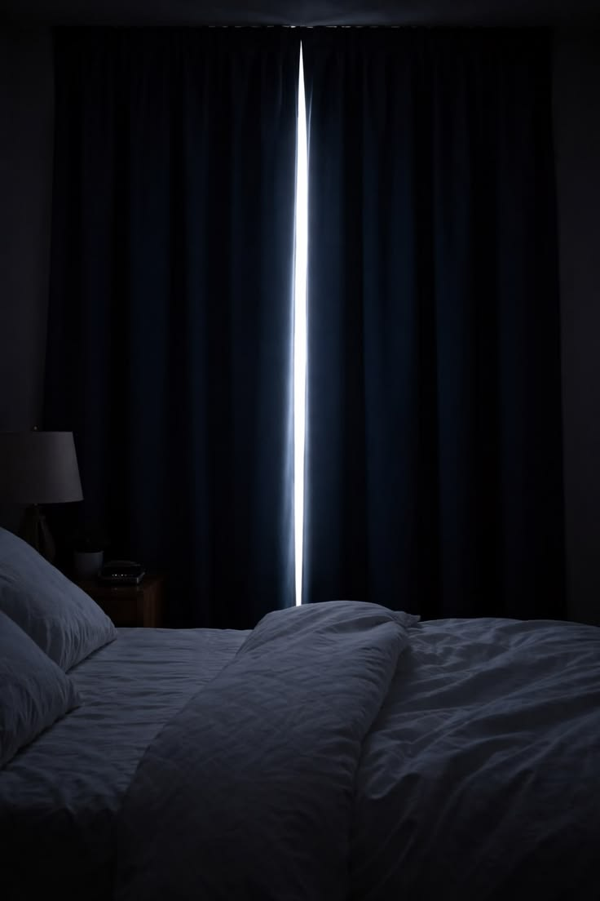

Layering is the single detail that separates a curtain that simply covers a window from one that finishes a room. Done well, it adds softness, depth and a sense that the light itself has been considered — not just blocked out. Done poorly, it looks bulky, mismatched, or like an afterthought. The good news is that the difference usually comes down to four decisions: fabric weight, fullness, hanging height and hardware.
Why Layer at All?
A single layer of curtain asks one fabric to do two jobs at once — control light and add texture — and it rarely does both well. Sheers alone let in privacy concerns; heavy drapery alone can feel dark and static once closed. Layering splits the work: a sheer panel handles daytime privacy and softens hard sunlight, while a heavier drape provides evening privacy, insulation and the visual weight a room needs.
"The sheer is doing the quiet work all day. The drape is there for the moments the room needs to feel closed and calm."
Getting the Fabric Weight Right
Pair fabrics from opposite ends of the weight spectrum rather than two mid-weight materials — the contrast is what reads as intentional. A voile or linen-look sheer works underneath almost anything heavier: cotton velvet, wool-blend, or a textured linen union. Avoid pairing two sheers or two heavy fabrics together; the layering effect disappears and it simply looks like one thick curtain.
- Living rooms: linen sheer + cotton velvet drape, for warmth without heaviness.
- Bedrooms: voile sheer + blackout-lined drape, for daytime softness and night-time darkness.
- Dining rooms: sheer + a mid-weight patterned or textured drape, since these rooms are rarely closed for privacy.

Fullness and Header Style
Fullness — how much fabric is gathered relative to the width of the window — is what makes layered curtains look tailored rather than flat. As a rule of thumb, sheers should be cut with roughly double the fullness of the window width, while the outer drape can sit slightly fuller still if a more formal look is wanted. Pinch pleat and wave headers both layer well; wave heads in particular keep the outer drape's folds soft and even, which reads cleanly against a gathered sheer underneath.
Hanging Height and Hardware
Mount the track or pole as close to the ceiling as the wall allows — even 10–15cm above the window frame draws the eye upward and makes the ceiling feel higher. When layering, use a double track or a combination bracket so the sheer sits closer to the glass and the drape hangs slightly forward of it; this keeps the two layers from tangling and lets both fall cleanly when open.
Finally, let both layers extend a little past the window frame on each side — usually 10–20cm — so that when they're open, the curtains stack back onto the wall rather than blocking any part of the glass. It's a small adjustment, but it's often the one that makes a finished room feel considered rather than simply furnished.